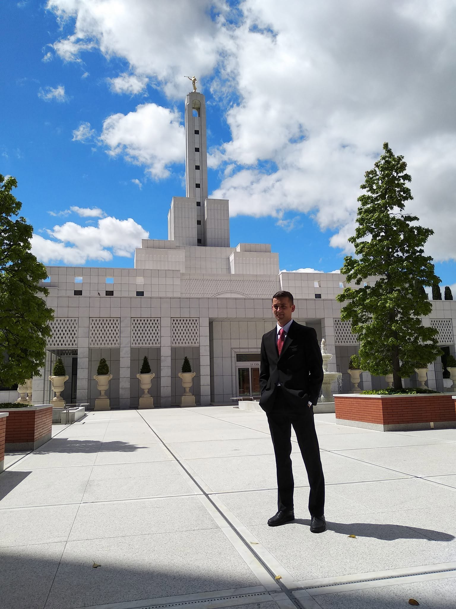

Jurgen Mene | WDD 130

Hello! My name is Jurgen Mene, and I am from Tirana, Albania. I am studying Applied Business Management through BYU Idaho. I am a business owner, and I enjoy entrepreneurship, technology, and spending time with my family. I am excited to learn web development because I want to improve my technical skills and use them to grow my businesses.